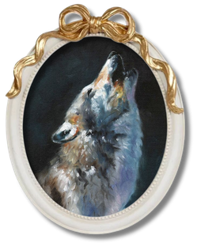

[74] There is a story I love about a pioneer husband and wife killed by wolves. Neighbours found their bodies torn open and strewn around their tiny cabin, but never located their infant daughter, alive or dead. People claimed they saw the girl running with a wolf pack, loping over the terrain as wild and feral as any of her companions.
[75] News of her would ripple through the local settlements. She menaced a hunter in a winter forest – though perhaps he was less menaced than startled at a tiny naked girl baring her teeth and howling. A young woman trying to take down a horse. People even saw her ripping open a chicken in an explosion of feathers.
[76] Many years later, she was said to be seen resting in the rushes along a riverbank, suckling two wolf cubs. I like to imagine that they came from her body, the lineage of wolves tainted human just the once. They certainly bloodied her breasts, but she did not mind because they were hers and only hers.
Within this narrative, the account of an orphaned girl raised by wolves serves as a poignant allegory for the protagonist’s socialization within a patriarchal framework. The wolves symbolize a male-dominated society, and the girl’s wolf-like behavior illustrates the internalization of the values, behaviors, and cultural norms of her environment. Though she is human, her sense of identity is entirely subsumed by the "pack." By imitating the breastfeeding practices of female wolves despite her physical suffering, she blindly conforms to established domestic norms, prioritizing the needs of the collective over her own physical autonomy.
In the event in the female protagonist’s life that follows this story, she is revealed to be pregnant—expecting to mother a child like the orphan in the urban legend. Later on, it is revealed that the child is a boy. Following the metaphor in the urban legend, this boy is a wolf. Thus, it can be predicted that eventually, the protagonist will bleed in raising this boy. It is confirmed when, for the first time, upon his father’s influences, the boy raised malicious intents on his mother’s ribbon.